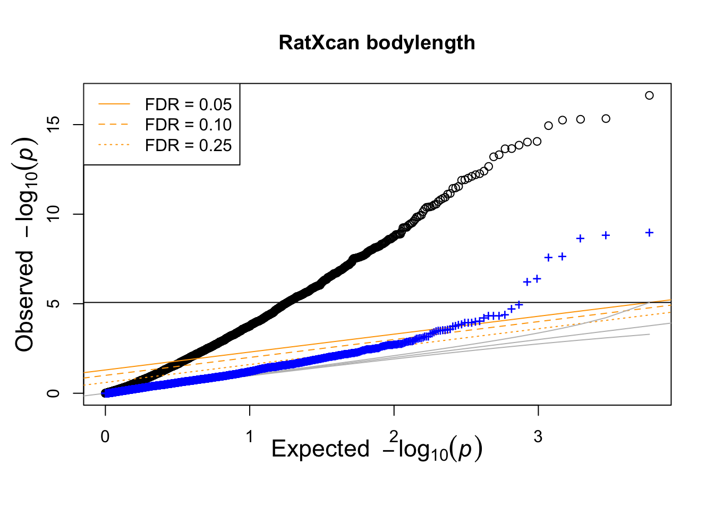
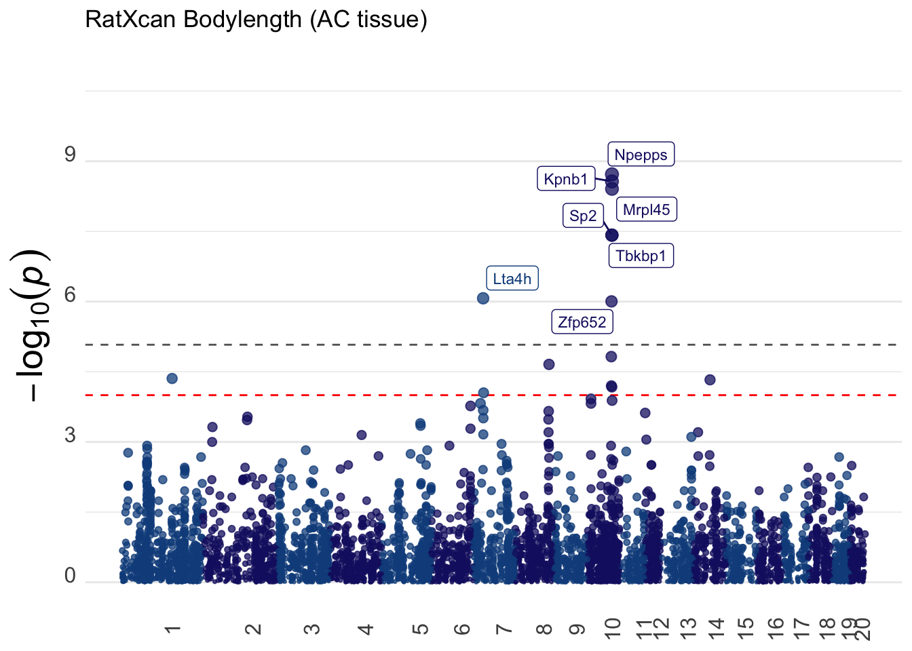

## compare observed correlation with null correlation plotting functions
suppressMessages(devtools::source_gist("a925fea01b365a8c605e")) ## qqR fn https://gist.github.com/hakyim/a925fea01b365a8c605e
suppressMessages(devtools::source_gist("38431b74c6c0bf90c12f")) ## qqunif https://gist.github.com/hakyim/38431b74c6c0bf90c12f
## ratxcan functions
suppressMessages(devtools::source_gist("115403f16bec0a0e871f3616d552ce9b")) ## https://gist.github.com/hakyim/115403f16bec0a0e871f3616d552ce9b
suppressMessages(library(tidyverse))
suppressMessages(library(glue))
suppressMessages(library(readr))
suppressMessages(library(biomaRt))
## to install qvalue
## if (!require("BiocManager", quietly = TRUE))
## install.packages("BiocManager")
## BiocManager::install("biomaRt")RatXcan Tutorial
Data Requirements
genotype (plink bed/bim/fam format)
phenotype (TSV with columns FID, IID, phenotypes)
prediction weights (*.db models on https://predictdb.org)
All of the data and prediction models used in the tutorial can be downloaded from Box: https://uchicago.box.com/v/ratxcan-tutorial.
Software Requirements
plink
gcta
metaxcan (included in Box folder)
- set up conda environment
conda env create -f /Users/sabrinami/ratxcan-tutorial/MetaXcan/software/conda_env.yaml
conda activate imlabtoolsAlso check that the folders containing compiled plink and gcta binary files are in your $PATH variable.
Setup
In this section, we generate all results needed for the mixed effects modeling (predicted gene expression, genetic relatedness, and heritability)
Define Paths
PRE="/Users/sabrinami/ratxcan-tutorial" ## Replace with path to downloaded ratxcan-tutorial folder
OUTPUT="$PRE/output"
METAXCAN="$PRE/MetaXcan"
MODEL="$PRE/models"
GENO_PREFIX="$PRE/data/genotype/rat6k"Both VCF and bed/bim/fam formatted genotypes are used, convert files if needed:
plink --bfile $GENO_PREFIX --recode vcf --out $GENO_PREFIX
gzip ${GENO_PREFIX}.vcfPredict Expression
The models folder contains PrediXcan prediction models trained on 5 tissues:
nucleus accumbens (
AC-filtered.db)infralimbic cortex (
IL-filtered.db)lateral habenula (
LH-filtered.db)prelimbic cortex (
PL-filtered.db)orbitofrontal cortex (
VO-filtered.db)
For the tutorial, we’ll use the AC model.
conda activate imlabtools
python ${METAXCAN}/software/Predict.py \
--model_db_path ${MODEL}/AC-filtered.db \
--model_db_snp_key rsid \
--vcf_genotypes ${GENO_PREFIX}.vcf.gz \
--vcf_mode genotyped \
--on_the_fly_mapping METADATA "{}_{}_{}_{}" \
--prediction_output $OUTPUT/AC-filtered-rat6k__predict.txt \
--prediction_summary_output $OUTPUT/AC-filtered-rat6k__summary.txt \
--throwPrepare Inputs for Mixed Effect Model
Setup
Load Libraries and Gist Functions:
Replace with your path to downloaded ratxcan-tutorial folder:
PRE <- "/Users/sabrinami/ratxcan-tutorial"
OUTPUT <- glue("{PRE}/output")Read in GRM, h2, phenotypes, and predicted gene expression
## read grm
grm_mat <- read_GRMBin(glue("{OUTPUT}/rat6k.grm"))
grm_id <- read_tsv(glue("{OUTPUT}/rat6k.grm.id"), col_names = FALSE)Rows: 5628 Columns: 2
── Column specification ────────────────────────────────────────────────────────
Delimiter: "\t"
chr (2): X1, X2
ℹ Use `spec()` to retrieve the full column specification for this data.
ℹ Specify the column types or set `show_col_types = FALSE` to quiet this message.names(grm_id) <- c("FID","IID")
## read h2
tempo <- read_tsv(glue("{OUTPUT}/bodylen_h2.hsq")) %>% filter(Source=="V(G)/Vp")Warning: One or more parsing issues, call `problems()` on your data frame for details,
e.g.:
dat <- vroom(...)
problems(dat)Rows: 10 Columns: 3
── Column specification ────────────────────────────────────────────────────────
Delimiter: "\t"
chr (1): Source
dbl (2): Variance, SE
ℹ Use `spec()` to retrieve the full column specification for this data.
ℹ Specify the column types or set `show_col_types = FALSE` to quiet this message.bodylen_h2 <- tempo %>% pull(Variance)
bodylen_se <- tempo %>% pull(SE)
## read phenotype
pheno_df <- read_tsv(glue("{PRE}/data/phenotype/pheno.fam"), col_names = FALSE)Rows: 5401 Columns: 4
── Column specification ────────────────────────────────────────────────────────
Delimiter: "\t"
chr (2): X1, X2
dbl (2): X3, X4
ℹ Use `spec()` to retrieve the full column specification for this data.
ℹ Specify the column types or set `show_col_types = FALSE` to quiet this message.names(pheno_df) <- c("FID","IID","bodylen","bmi")
## read predicted expression
pred_expr <- read_tsv(glue("{OUTPUT}/AC-filtered-rat6k__predict.txt")) %>%
dplyr::select(-FID) %>% # Remove the FID column
mutate(IID = str_split(IID, "_", simplify = TRUE)[, 1]) # Keep the first part of IIDRows: 5628 Columns: 5881
── Column specification ────────────────────────────────────────────────────────
Delimiter: "\t"
chr (2): FID, IID
dbl (5879): ENSRNOG00000015552, ENSRNOG00000016054, ENSRNOG00000049505, ENSR...
ℹ Use `spec()` to retrieve the full column specification for this data.
ℹ Specify the column types or set `show_col_types = FALSE` to quiet this message.Summarize median predicted expression for all genes:
med_expr <- sapply(pred_expr %>% dplyr::select(-IID) %>% na.omit(), function(x) median(x, na.rm = TRUE)) %>% unname
summary(med_expr) Min. 1st Qu. Median Mean 3rd Qu. Max.
-4742.218 -0.442 0.000 -0.646 0.368 1998.544 Plot distribution of median gene expression with outliers removed:
lower <- quantile(med_expr, 0.01)
upper <- quantile(med_expr, 0.99)
filter_med_expr <- med_expr[med_expr >= lower & med_expr <= upper]
# breaks <- seq(min(med_expr), max(med_expr), by = 0.5) # Adjust the 'by' value as needed
hist(filter_med_expr, main = "Med", xlab = "Values", ylab = "Frequency", col = "lightblue", border = "black")
Final check that IIDs between phenotype and genotype matrices align:
idlist <- intersect(pheno_df$IID, grm_id$IID)
grm_mat <- grm_mat[idlist,idlist]
pheno_df <- pheno_df %>% filter(IID %in% idlist)
if(!identical(colnames(grm_mat),pheno_df$IID))message("IIDs are not aligned between GRM and phenotype")Convert to Matrices
ymat = matrix( pheno_df$bodylen, nrow(pheno_df),1 )
rownames(ymat) = pheno_df$IIDexp_mat = as.matrix(pred_expr %>% dplyr::select(-IID))
rownames(exp_mat) = pred_expr$IID
exp_mat = exp_mat[rownames(ymat),]
if(!identical(rownames(exp_mat), rownames(ymat))) warning("IDs not matched")RatXcan Association
The end goal is to compute gene-level associations under the mixed effect model \(Y = T b + u + \epsilon\), where
\(Y\) is the phenotype
\(T\) is predicted gene expression
\(u\) is the random effect with covariance given by the genetic relatedness matrix (\(GRM\))
\(\epsilon\) is uncorrelated noise
The difference between RatXcan and PrediXcan is the \(u\) term accounting for correlated effects due to relatedness. The \(GRM\) and \(h2\) estimates are needed to decorrelate the error term \(u+\epsilon\), so that traditional linear regression can replace mixed modeling fitting.
Run regression
lmmGRM performs the decorrelation and linear regression. It takes phenotype, GRM, h2, and predicted expression as input, and computes gene-level correlation and p-value with and without correction accounting for relatedness.
## HERE WE USE THE FULL GRM MATRIX AND CALCULATE THE INVERSE OF THE SIGMA MATRIX}
## define lmm association function
lmmGRM = function(pheno, grm_mat, h2, pred_expr, pheno_id_col=1,pheno_value_cols=6:6,out=NULL)
{
## input pheno is a data frame with id column pheno_id_col=1 by default
## phenotype values are in pheno_value_cols, 6:6 by default (SCORE column location in plink output), it can have more than one phenotype
## but h2 has to be the same, this is useful when running simulations with different h2
## call lmmXcan(pheno %>% select(IID,SCORE))
## format pheno to matrix form
phenomat <- as.matrix(pheno[,pheno_value_cols])
rownames(phenomat) <- pheno[[pheno_id_col]]
## turn pred_expr into matrix with rownames =IID, keep only IIDs in ymat
exp_mat = as.matrix(pred_expr %>% dplyr::select(-IID))
rownames(exp_mat) = pred_expr$IID
## align pheno and expr matrices
idlist = intersect(rownames(phenomat), rownames(exp_mat))
nsam = length(idlist)
## number
num_genes <- ncol(exp_mat)
print(glue("{nsam} samples, {num_genes} genes used in association test"))
## CALCULATE SIGMA
ID_mat = diag(rep(1,nsam))
Sigma = grm_mat[idlist,idlist] * h2 + (1 - h2) * ID_mat
Sig_eigen = eigen(Sigma)
rownames(Sig_eigen$vectors) = rownames(Sigma)
isighalf = Sig_eigen$vectors %*% diag( 1 / sqrt( Sig_eigen$values ) ) %*% t(Sig_eigen$vectors)
## perform raw association
cormat_raw = matrix_lm(phenomat[idlist,, drop = FALSE], exp_mat[idlist,])
pmat_raw = cor2pval(cormat_raw,nsam)
colnames(pmat_raw) <- gsub("cor_", "pval_", colnames(pmat_raw))
## perform corrected association
cormat_correct = matrix_lm(isighalf%*% phenomat[idlist,, drop = FALSE], isighalf %*% exp_mat[idlist,])
pmat_correct = cor2pval(cormat_correct,nsam)
colnames(pmat_correct) <- gsub("cor_", "pval_", colnames(pmat_correct))
# write outputs to file
if(!is.null(out))
{
saveRDS(cormat_correct,file = glue("{out}_cormat_correct.RDS"))
saveRDS(pmat_correct, file = glue("{out}_pmat_correct.RDS"))
saveRDS(cormat_raw, file = glue("{out}_cormat_raw.RDS"))
saveRDS(pmat_raw, file = glue("{out}_pmat_raw.RDS"))
}
res = list(
cormat_correct=cormat_correct,
pmat_correct=pmat_correct,
cormat_raw=cormat_raw,
pmat_raw=pmat_raw)
return(res)
}trait = "bodylen"
h2 = bodylen_h2
h2se = bodylen_h2+bodylen_se
##pheno, grm_mat, h2, pred_expr,pheno_id_col=1,pheno_value_cols=6:6,out=NULL
res_h2 <- lmmGRM(pheno_df,grm_mat, h2, pred_expr,pheno_id_col=1, pheno_value_cols=which(colnames(pheno_df)==trait))5401 samples, 5879 genes used in association test# png(glue("{OUTPUT}/bodylen-AC-lmmGRM.png"))qqunif.compare(res_h2$pmat_raw,res_h2$pmat_correct,main=glue("Ratxcan bodylength") )saveRDS(res_h2,glue("{OUTPUT}/bodylen_AC_h2.RDS"))Plot P-values
The following QQ-plot shows the distribution of p-values of gene-trait associations: blue dots are the p-values with mixed effects correction and black dots are the inflated p-values.
#png(glue("{OUTPUT}/bodylen-AC-lmmGRM.png"))
qqunif.compare(res_h2$pmat_raw,res_h2$pmat_correct,main=glue("RatXcan bodylength") )
The following Manhattan plot was generated with Natasha Santhanam’s function:
## here
## qq_manhattan(tempo %>% rename(pvalue=p_acat_6))
library(ggrepel)
gg_manhattan <- function(df, titulo="",significance_threshold = 0.05) {
## USAGE: gg_manhattan(df,0.05)
## df has columns: pvalue, chr (numeric), and start (position)
## significance threshold gets divided by the number of tests
##
df <- df %>% filter(!is.na(pvalue))
# Calculate cumulative base pair positions
data_cum <- df %>%
group_by(chr) %>%
summarise(max_bp = as.numeric(max(start)), .groups = 'drop') %>%
mutate(bp_add = lag(cumsum(max_bp), default = 0))
gwas_data <- df %>%
inner_join(data_cum, by = "chr") %>%
mutate(bp_cum = start + bp_add)
# Calculate axis labels
axis_set <- gwas_data %>%
group_by(chr) %>%
summarize(center = mean(bp_cum), .groups = 'drop')
# Determine the ylim based on the most significant p-value
ylim <- gwas_data %>%
filter(pvalue == min(pvalue)) %>%
summarise(ylim = abs(floor(log10(pvalue))) + 2) %>%
pull(ylim)
# Calculate the genome-wide significance level
sig <- significance_threshold / nrow(df)
# Construct the Manhattan plot
manhattan_plot <- ggplot(gwas_data, aes(x = bp_cum, y = -log10(pvalue), color = as.factor(chr), size = -log10(pvalue))) +
geom_hline(yintercept = -log10(sig), color = "grey40", linetype = "dashed") +
geom_hline(yintercept = -log10(0.0001), color = "red", linetype = "dashed") +
geom_point(alpha = 0.75, shape = 19) + # Simplified shape decision for clarity
geom_label_repel(aes(label = ifelse(pvalue <= sig, gene_name, "")), size = 3) +
ylim(c(0, ylim)) +
scale_x_continuous(labels = axis_set$chr, breaks = axis_set$center) +
scale_color_manual(values = rep(c("dodgerblue4", "midnightblue"), length(unique(axis_set$chr)))) +
scale_size_continuous(range = c(0.5, 3)) +
labs(x = NULL, y = expression(-log[10](italic(p)))) +
theme_minimal() +
theme(legend.position = "none",
panel.border = element_blank(),
panel.grid.major.x = element_blank(),
panel.grid.minor.x = element_blank(),
axis.text.x = element_text(angle = 90, size = 12),
axis.text.y = element_text(size = 12, vjust = 0),
axis.title = element_text(size = 20))
if(titulo !="") manhattan_plot = manhattan_plot + ggtitle(titulo)
return(manhattan_plot)
}
We used biomaRt to annotate genes:
human = biomaRt::useEnsembl(biomart='ensembl', dataset="hsapiens_gene_ensembl", mirror = "useast")Ensembl site unresponsive, trying asia mirrorEnsembl site unresponsive, trying www mirrorattributes = c("ensembl_gene_id", "external_gene_name", "rnorvegicus_homolog_ensembl_gene", "rnorvegicus_homolog_associated_gene_name")
orth.rats = biomaRt::getBM(attributes, filters="with_rnorvegicus_homolog",values=TRUE, mart = human, uniqueRows=TRUE)
# saveRDS(orth.rats,file=glue("{PRE}/data/expression/orth.rats.RDS"))bodylen_res <- read_csv(glue("{PRE}/data/ratxcan-bodylen-results.csv")) %>% dplyr::select(gene_name, AC, chr, start) %>% rename(pvalue=AC)Rows: 10933 Columns: 17
── Column specification ────────────────────────────────────────────────────────
Delimiter: ","
chr (5): gene_name, hugo_gene, trait, gene, gene_id
dbl (12): p_acat_6, chr, start, qval, p_human, BR, AC, IL, LH, PL, VO, p_acat_5
ℹ Use `spec()` to retrieve the full column specification for this data.
ℹ Specify the column types or set `show_col_types = FALSE` to quiet this message.gg <- gg_manhattan(bodylen_res, titulo="RatXcan Bodylength (AC tissue)")
# ggsave(glue("{OUTPUT}/bodylen-manhattan-p_AC.png"))
print(gg)
The full RatXcan results includes tissue-specific p-values (AC, IL, LH, PL, VO) and a combination p-value (ACAT), as well as PhenomeXcan results for corresponding human phenotypes and genes. The datasets are included in the data subdirectory and accessible on https://imlab.shinyapps.io/RatXcan/.
No matching items